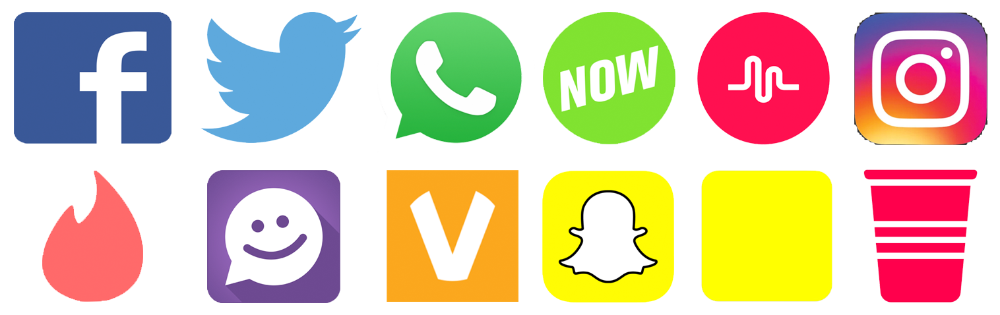

eSafety
1 The Social Network
Learn It
- There are lots of different Social media platforms.
- They all have something different to offer, but they all have the potential for problems.

- With a partner, see how many of the networks above can you identify in 3 minutes.
- For each, how would you describe it to someone who has only ever used Facebook?
Badge It
- Your literacy is being assessed in this task. Ensure you spell-check your work, use paragraphs and appropriate vocabulary.
- Create a short summary document for a parent, explaining five different social media networks shown above. For each, explain:
- A brief explanation of how the service works
- What's good about it
- Problems that can be encountered
- What can be done to protect a young person
- For example…
*Facebook:* Users write their thoughts, which are published to their 'wall'. Unless their privacy settings are set to 'friends only', anyone in the World can read them. This is a nice way for friends to stay in touch with their friends and family, share photos of days out and so on. People can impersonate others. Some adults can pretend to be children, with a view to forming inappropriate (soemtimes sexual) relationships with them. Some people can post messages which they later regret. While they can be deleted, they have the capability to cause a lot of upset. Users should set their privacy settings to 'friends only', avoid accepting strangers as friends and think carefully before posting.
- Silver: Identify and briefy describe five different networks.
- Gold: As for silver, but also includes advantages and risks of each network.
- Platinum: As for gold, but includes parent-friendly advice for each network.
- Useful resources: